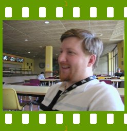

People of openSUSE: JP Rosevear

Here goes another ‘People of openSUSE’ interview, this time with a Canadian Novell employee and GNOME hacker – JP Rosevear. Besides his GNOME code contribution, he is the desktop development manager at Novell.
- Nickname: jpr
- Homepage: http://jprosevear.org
- Blog: http://jprosevear.org/blog/
- Favorite season: autumn
- Motto: To each his own
Please introduce yourself!
Born and raised in Canada, I live just outside of Toronto currently. I’m married to my lovely wife Tara and we have two daughters, Emily and Abigail.
I work for Novell and before that I worked for Ximian. I’ve been involved in the GNOME project since about 1998 and contributing code since 1999.
Currently I’m a development manager at Novell for the desktop and OpenOffice, before that for Evolution and before that I was an Evolution developer.
Tell us about the background to your computer use.
Somehow my parents were rather perceptive about computers and me, they bought me a Vic 20 in 1980 having never used a computer themselves as far as I know. I programmed by reading the manual and copying the program listings into the computer. There was also a great typing wizard game in cartridge form that helped me learn to touch type. After that it was MS-DOS, gwbasic, Turbo Basic and on up the ladder through high school and university.
When and why did you start using openSUSE/SUSE Linux?
I started using it in 2003 when Novell purchased SUSE, before that we had no distro of our own at Novell or Ximian, so it seemed like the right thing to do.
When did you join the openSUSE community and what made you do that?
I would say I’d been on the periphery of the openSUSE community since the project started, as I was a desktop team manager on the SLED 10 project and that of course uses openSUSE as its base. I was not really active until early 2007 when I wanted to see SLED push its innovations into openSUSE earlier and grow the GNOME community around openSUSE. At that time I got the #opensuse-gnome irc channel and the opensuse-gnome@opensuse.org mailing list going.
In what way do you participate in the openSUSE project?
I run our openSUSE GNOME meetings in irc, test, help triage bugs, do a little packaging and other things like that. I of course also have a number of people on my team at Novell who contribute to directly to openSUSE (Boyd, Scott, Rodrigo, Michael Wolf, Hans Petter Jansson). As well as the OpenOffice team are always pushing the latest and greatest into openSUSE via ooo-build, http://go-oo.org/ and #go-oo on Freenode.
What especially motivates you to participate in the openSUSE project?
I want to create a better and innovative desktop for users and openSUSE is the platform that allows me to do that.
What do you think was your most important contribution to the openSUSE project/community or what is the contribution that you’re most proud of?
Helping to generate an active community around GNOME, see http://en.opensuse.org/GNOME and #opensuse-gnome.
When do you usually spend time on the openSUSE project?
Usually between 8am and 5pm EST and 7-9 EST Monday to Friday. Sometimes on weekends.
Three words to describe openSUSE? Or make up a proper slogan!
Huge potential.
What do you think is missing or underrated in the distribution or the project?
Underrated in the project is build service, this is a very powerful tool for people to get involved.
Missing in the distro is a reliable distro upgrade functionality with FACTORY which is key for testing (NB. its been getting a lot better).
Missing in the project is more information flow about big key development changes as they go into factory – whether it be blogs, mails to opensuse-factory or whatever – we can use that to generate more excitement around the distro.
What do you think the future holds for the openSUSE project?
A few things, I think we’ll have specialized builds of the distro for various projects like the Education project is doing, I think the community will continue to build is size and capability and I think (pray) more stuffed geckos will be forthcoming.
A person asks you why he/she should choose openSUSE instead of other distribution/OS. What would be your arguments to convince him/her to pick up openSUSE?
openSUSE is where desktop innovation will take place (think the next Xgl/Compiz for instance – look at ideas.opensuse.org). As well the amount of new development being contributed upstream by openSUSE and Novell makes this a project that builds bridges with other communities (for instance the driver project being led by Greg KH) which will give a healthy community long term for users to participate in.
Long term stability is also something thats been done very well – I’m amazed at the number of people on the support lists that say they have 10.0 or older still in active use.
Which members of the openSUSE community have you met in person?
Lots, but mostly the ones that work at Novell so far. That’ll change at FOSDEM this year.
How many icons are currently on your desktop?
32
What is the application you can’t live without? And why?
Tomboy. I like to be an information vacuum and its a great way to get some semi-organization on all the information I read through and encounter.
Which application or feature should be invented as soon as possible?
Well, I’d like to see information organizers that learn the precedence information has for (via Bayesian or whatever). I’d also like to see more done around distributed home servers that connect to back each other up, provide processing, etc.
Which is your preferred text editor? And why?
emacs, I think its mostly just habit now.
Which famous person would you want to join the openSUSE community?
Don’t know, but I would like to be a non-geek to help crossover the notion of free software to the broader world.
Which computer related skills would you like to have?
Probably some more web technology understanding.
The Internet crashes for a whole week. How would you feel, what would you do?
I’d feel a lot less busy that’s for sure, since I work remotely I’d basically be able to do nothing managerially, I’d probably take it as a break to do some hacking :-) .
Which is your favorite movie scene?
The scene in the Godfather where Michael Corleone decides they have to kill the police captain and the Turk. At the start of that scene Sonny Corleone (James Caan) is running the family and Michael is not involved at all. As they zoom in on Michael they make it clear he is not only involved, he is in charge. Thats when he really becomes the new Don.
“I love the smell of napalm in the morning” in Apocalypse Now would be a close second.
Star Trek or Star Wars?
Star Trek before Gene Rodenberry died.
What is your favorite food and drink?
Pizza and Single Malt Scotch
Favorite game or console (in your childhood and nowadays)?
Never had a game console until PS1. I really like my PS3 but I am sorely tempted to get a Wii.
Which city would you like to visit?
Any city in South America or Africa. I have not been to those continents.
What is your preferred way to spend your vacation?
With two small kids, right now its camping or doing things around the house.
Someone gives you $1.000.000. What would you do with the money?
Invest it, let the interest income pile up over a few years and retire to work on free software and other interests.
If traveling through time was possible, when would we be most likely to meet you?
Maybe late 19th century London, England.
There’s a thunderstorm outside. Do you turn off your computer?
Heck no, thats why you have a UPS.
Have your ever missed an appointment because you forgot about it while sitting at your computer?
Yes. Flow state is where its at.
Show us a picture of something, you have always wanted to share!
My winning shot in the Novell vs RedHat Desktop Managers pool competition at the GNOME Summit this year. JRB did put up good fight though.
http://farm3.static.flickr.com/2064/1521792728_635133d3dd.jpg
{kind=link}
He’s going to be regretting the record of this for a long time.
You couldn’t live without…
Well, technically I should say “water” or “air” or “shelter” or something, but leaving aside the fundamental basics I’ll say “friends”.
Which question was the hardest to answer?
The underrated/missing question.
What other question would you like to answer? And what would you answer?
Q: What can the project do to get more upstream FOSS developers using openSUSE?
A: Focus on a couple of key areas like performance (ie more of Coolo’s boot time improvements), power management (via Powertop), package availability, things like that.